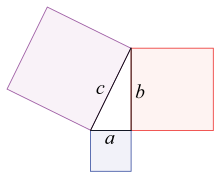

Antigua Grecia.

Las matemáticas griegas hacen referencia a las matemáticas escritas en griego desde el 600 a. C. hasta el 300 d. C. Los matemáticos griegos vivían en ciudades dispersas a lo largo del Mediterráneo Oriental, desde Italia hasta el Norte de África, pero estaban unidas por un lenguaje y una cultura comunes. Las matemáticas griegas del periodo siguiente a Alejandro Magno se llaman en ocasiones Matemáticas helenísticas.
Las matemáticas griegas eran más sofisticadas que las matemáticas que habían desarrollado las culturas anteriores. Todos los registros que quedan de las matemáticas pre-helenísticas muestran el uso del razonamiento inductivo, esto es, repetidas observaciones usadas para establecer reglas generales. Los matemáticos griegos, por el contrario, usaban el razonamiento deductivo. Los griegos usaron la lógica para deducir conclusiones, o teoremas, a partir de definiciones y axiomas. La idea de las matemáticas como un entramado de teoremas sustentados en axiomas está explícita en los Elementos de Euclides (hacia el 300 a. C.).
Se cree que las matemáticas griegas comenzaron con Tales (hacia 624 a. C.-546 a. C.) y Pitágoras(hacia 582 a. C. - 507 a. C.). Aunque el alcance de su influencia puede ser discutido, fueron inspiradas probablemente por las matemáticas egipcias, mesopotámicas e indias. Según la leyenda, Pitágoras viajó a Egipto para aprender matemáticas, geometría y astronomía de los sacerdotes egipcios.
Tales usó la geometría para resolver problemas tales como el cálculo de la altura de las pirámides y la distancia de los barcos desde la orilla. Se atribuye a Pitágoras la primera demostración del teorema que lleva su nombre, aunque el enunciado del teorema tiene una larga historia.27 En su comentario sobre Euclides, Proclo afirma que Pitágoras expresó el teorema que lleva su nombre y construyó ternas pitagóricas algebraicamente antes que de forma geométrica. La Academia de Platón tenía como lema "Que no pase nadie que no sepa Geometría".
Los Pitagóricos probaron la existencia de números irracionales. Eudoxio (408 al 355 a. C.) desarrolló el método exhaustivo, un precursor de la moderna integración. Aristóteles (384 al 322 a. C.) fue el primero en dar por escrito las leyes de la lógica. Euclides (hacia el 300 a. C.) dio el ejemplo más temprano de la metodología matemática usada hoy día, con definiciones, axiomas, teoremas y demostraciones. También estudió las cónicas. Su libro Elementos recoge toda la matemática de la época.29 En los Elementos se abordan todos los problemas fundamentales de la matemática, aunque siempre bajo un lenguaje geométrico. Además de problemas geométricos, también trata problemas aritméticos, algebraicosy de análisis matemático.29 Además de los teoremas familiares sobre geometría, tales como el Teorema de Pitágoras, los Elementos incluyen una demostración de que la raíz cuadrada de dos es un número irracional y otra sobre la infinitud de los números primos. La Criba de Eratóstenes (hacia 230 a. C.) fue usada para el descubrimiento de números primos.
Arquímedes de Siracusa (hacia 287-212 a. C.) usó el método exhaustivo para calcular el área bajo un arco de parábola con ayuda de la suma de una serie infinita y dio una aproximación notablemente exacta de pi. También estudió la espiral, dándole su nombre, fórmulas para el volumen de superficies de revolución y un ingenioso sistema para la expresión de números muy grandes.

Obra publicada con Licencia Creative Commons Reconocimiento Compartir igual 4.0